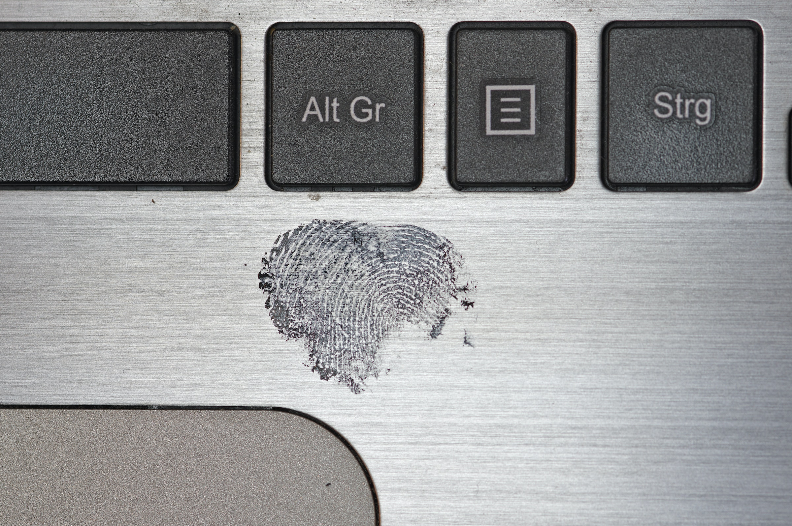

Crime in the digital space is nothing new, as everyone who has received an e-mail from a Nigerian prince can testify. However, when artificial intelligence becomes widely available to make scams more believable and targeted, the landscape for those hunting cyber criminals becomes more complex.
Image shows scam message scammers used to impersonate the Norwegian Police.
Phishing is a practice where scammers send emails or messages that mimic legitimate organizations or businesses, tricking individuals into revealing personal information like passwords or credit card details. These scams often create a sense of urgency, leading recipients to click on malicious links or submit sensitive data.
"The more polished the scams become, the more important the humans become."
Image shows scam message scammers tried to send to one of our group members.
August Aunan is a security engineer in the Norwegian Police IT Unit is not entirely negative to AI making its entrance in the cyber crime domain. Tracking and discovering criminals is a daunting task that is made easier with machine learning. Aunan says his colleagues often discover threats by form and context, not content alone.
- Physical security is so intuitive to us as humans. What we have realized is that while humans are often seen as the weaker link, they can just as well be the strongest, but it requires training over time.
August Aunan
As cybercriminal capabilities have been enhanced by AI becoming more publicly available, Aunan believes that digital forensics may also see significant impovements in the near future. Work that must now be done by highly trained professionals may soon be automated, allowing experts to focus on other parts of threat mitigation and investigation.
The integration of AI in cybercrime adds complexity to the digital threat landscape. However, by leveraging both advanced technology and human intuition, we can create a more robust defense against these evolving threats. As August Aunan of the Norwegian Police IT Unit suggests, while AI poses challenges, it also offers tools to enhance our ability to track and counter cyber threats, turning a potential weakness into a strength with the right training and approach.
All pictures used on this webpage are either our own or downloaded from https://unsplash.com/.